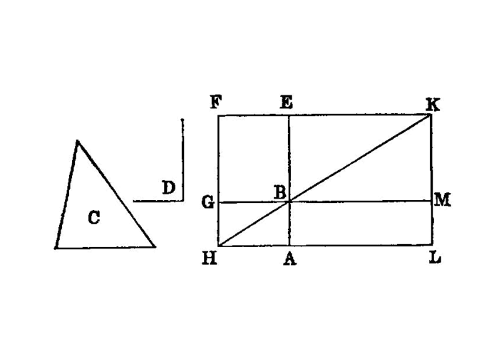

construct a parallelogram on a segment equal to a given triangle¶
{kind=link}
To a given straight line to apply, in a given rectilineal angle, a parallelogram equal to a given triangle.
===
Let AB be the given straight line, C the given triangle and D the given rectilineal angle; thus it is required to apply to the given straight line AB, in an angle equal to the angle D, a parallelogram equal to the given triangle C.
Let the parallelogram BEFG be constructed equal to the triangle C, in the angle EBG which is equal to D [I.42]; let it be placed so that BE is in a straight line with AB; let<pb n=”342”/>`FG` be drawn through to H, and let AH be drawn through A parallel to either BG or EF. [I.31]
Let HB be joined.
Then, since the straight line HF falls upon the parallels AH, EF, [^I.44:1]
the angles AHF, HFE are equal to two right angles. [I.29]
Therefore the angles BHG, GFE are less than two right angles; and straight lines produced indefinitely from angles less than two right angles meet; [I.post.5]
therefore HB, FE, when produced, will meet.
Let them be produced and meet at K; through the point K let KL be drawn parallel to either EA or FH, [I.31] and let HA, GB be produced to the points L, M.
Then HLKF is a parallelogram, HK is its diameter, and AG, ME are parallelograms. and LB, BF the so-called complements, about HK;
therefore LB is equal to BF. [I.43]
But BF is equal to the triangle C;
therefore LB is also equal to C. [I.c.n.1]
And, since the angle GBE is equal to the angle ABM, [I.15]
while the angle GBE is equal to D, the angle ABM is also equal to the angle D.
Therefore the parallelogram LB equal to the given triangle C has been applied to the given straight line AB, in the angle ABM which is equal to D.
## References
[I.15]: /elem.1.15 “Book 1 - Proposition 15” [I.29]: /elem.1.29 “Book 1 - Proposition 29” [I.31]: /elem.1.31 “Book 1 - Proposition 31” [I.42]: /elem.1.42 “Book 1 - Proposition 42” [I.43]: /elem.1.43 “Book 1 - Proposition 43” [I.post.5]: /elem.1.post.5 “Book 1 - Postulate 5” [I.c.n.1]: /elem.1.c.n.1 “Book 1 - Common Notion 1”
## Footnotes
- [^I.44:1]:since the straight line HF falls….”
The verb is in the aorist (<foreign lang=”greek”>ὲνέπεσεν</foreign>) here and in similar expressions in the following propositions.